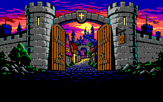
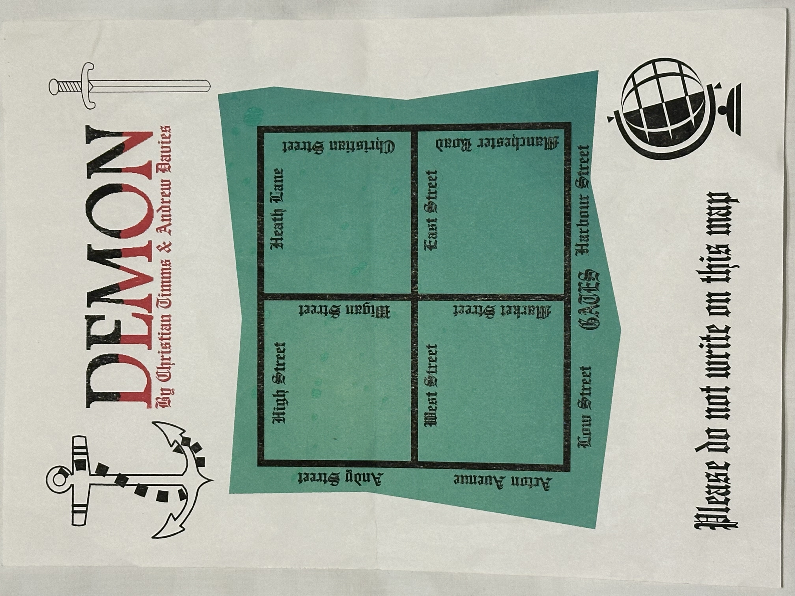

CTS SOFTWARE PRESENTS
THE ULTIMATE TEXT ADVENTURE
A game by Christian Timms and Andrew Davies

What do you do?
GAALWAY NAVIGATION AUTHORITY

The original map. It will grow more useful as streets and discoveries are added to the adventure.